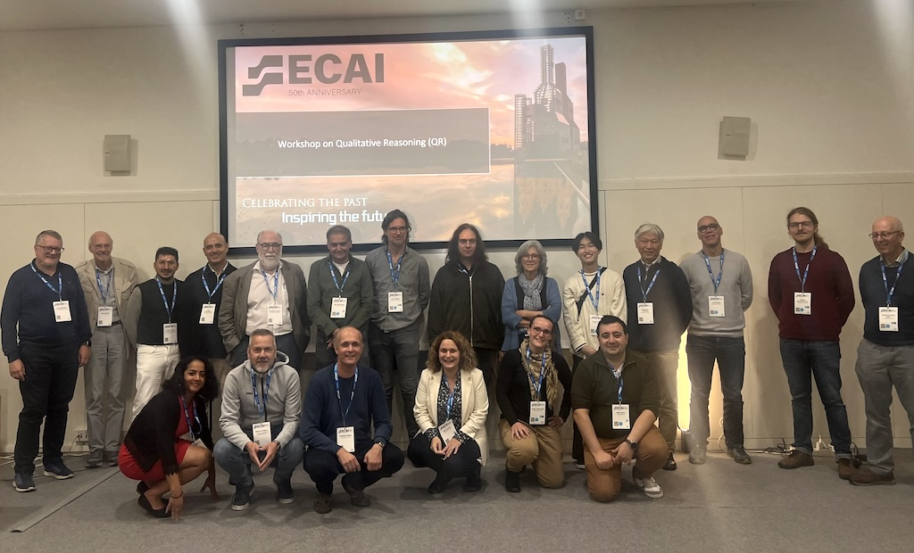

|
General |
Submissions |
Dates |
Committee |
Schedule and Papers |
Contact
|
General
Thanks to the QR community and all particpants for making the workshop a success!  QR 2024 particpants — looking forward to QR 2025
The Qualitative Reasoning (QR) community is involved with the development and application of qualitative representations to understand the world from incomplete, imprecise, or uncertain data. Our qualitative models span natural systems (e.g., physics, biology, ecology, geology), social systems (e.g., economics, cultural decision-making), cognitive systems (e.g., conceptual learning, spatial reasoning, intelligent tutors, robotics), and more.
The QR community includes researchers in Artificial Intelligence, Engineering, Cognitive Science, Applied Mathematics, and Natural Sciences, commonly seeking to understand, develop, and exploit the ability to reason qualitatively. This broadly includes:
- Developing new formalisms and algorithms for qualitative reasoning.
- Building and evaluating predictive, prescriptive, diagnostic, or explanatory qualitative models in novel domains.
- Characterizing how humans learn and reason qualitatively about the (physical) world with incomplete knowledge.
- Developing novel, formal representations to describe central aspects of our world: time, space, change, uncertainty, causality, and continuity.
The International Workshop on QR provides a forum for researchers from multiple perspectives to share research progress toward these goals. The workshop will be held at ECAI2024, Santiago de Compostela (see Dates).
Topics of interest includeFormer workshops
- Qualitative modeling in physical, biological and social sciences, and in engineering.
- Representations and techniques for QR.
- Methods that integrate QR with other forms of knowledge representation, including quantitative methods, machine learning and other formalisms.
- Using QR for diagnosis, design, and monitoring of physical systems.
- Applications of QR, including education, science, and engineering.
- Cognitive models of QR, including the use of existing QR formalisms for cognitive modeling and results from other areas of cognitive science for qualitative reasoning.
- Using QR in understanding language, decision-making, sketches, images, and other kinds of signals and data sources.
- Formalization, axiomatization, and mathematical foundations of QR.
- QR2023 (Kraków, Poland)
- QR2022 (Vienna, Austria)
- QR2021 (Montreal, Canada)
- QR2020 (Santiago de Compostela, Spain)
- QR2019 (Macao, China)
- QR2018 (Stockholm, Sweden)
- QR2016 (New York City, NY, USA)
- QR2015 (Minneapolis, USA)
- QR2013 (Bremen, Germany)
- QR2012 (Playa Vista, USA)
- QR2011 (Barcelona, Spain)
- QR2010 (Portland, USA)
- QR2009 (Ljubljana, Slovenia)
- QR2008 (Boulder, USA)
- QR1995 (Amsterdam, The Netherlands)
Further information on past workshops can be found via QR proceedings archive.
In cooperation with
University of Lübeck, Germany | Umeå University, Sweden


|